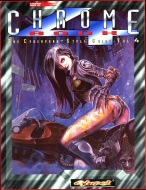

|  | Technical data |
| Supplement for the role-playing game Cyberpunk 2020, published by R. Talsorian Games (1996) | |
| Theme | Big Spring sale |
| Background quality | 3 / 5 |
| Scenario quality | - |
| Rules quality | 3 / 5 |
| Artworks quality | 3 / 5 |
| Writing quality | 3 / 5 |
Every two years, a Chromebook, such is the law. Here is the latest in the series, much thinner than its predecessors. What's new ? Implants, again and again, although this time the emphasis is on genetics and nanoïds. Then come the vehicles, always present. As usual, not all of them are illustrated which annoying me deeply. Then, a new equipment section for our friends the netrunners, and the everlasting equipment catalog. The novelty of this supplement (because you need it, otherwise you wouldn't buy it) is the chapter on fashion. Well illustrated, this passage is very nice to dress up your world : no more need to plunder alternative music magazines. In conclusion, my impression after reading Chromebook 3 is clearer : the imagination has dried up, and many things are just remakes, and only one chapter (fashion) is really innovative. It's a shame.
{kind=link}